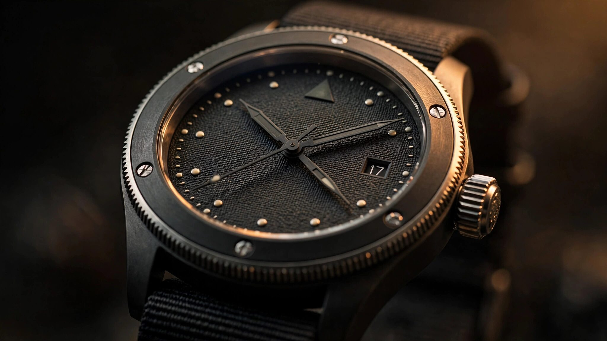

When the Watch Hits Back: How Casio’s TOUGH MVT.2 Detects Impact and Magnetic Fields Before the Hands Can Drift

Analog watches drift. Every analog quartz movement relies on physical hands coupled to a gear train coupled to a stepping motor, and any shock strong enough to slip a gear tooth or nudge a rotor will displace the hands from their correct position. In most circumstances this does not matter. A desk-bound watch absorbs nothing worse than the impact of setting down a coffee mug. But strap that watch to the wrist of a pilot pulling four g in a banking turn while surrounded by the magnetic fields of a glass cockpit full of avionics, and the engineering problem changes entirely.
Casio released the GWR-B3000 GRAVITYMASTER in July 2026 with a movement called TOUGH MVT.2 that addresses both problems simultaneously. It detects the impact that displaces the hands and corrects them in real time. It senses external magnetic fields before they can cause drift and freezes the hands until the field dissipates. And it sits inside a case structure designed not by a human engineer sketching cross-sections but by topology optimization software iterating through thousands of structural configurations to find the one that absorbs shock, resists centrifugal force, and dampens vibration while keeping the case 14.1 millimeters thin.
At 102 grams and roughly $700 at the entry-level reference, the GWR-B3000 costs less than the service bill on most Swiss pilot’s watches. What makes it worth examining is not the price. It is the engineering logic that treats a wristwatch as a closed-loop control system.
The Problem TOUGH MVT.2 Solves
Analog quartz watches display time through hands driven by a stepper motor. At every tick, an electronic pulse from the quartz oscillator circuit advances the motor by one step, rotating the gear train and moving the hands forward. Accuracy depends on two conditions: the oscillator must generate pulses at the correct frequency, and each pulse must advance the hands by exactly one step. Quartz oscillators handle the first condition reliably. The second condition is where trouble begins.
A sharp impact can cause a stepper motor to skip a step or overshoot. Vibration at certain frequencies can excite resonance in the gear train, causing cumulative positional error. Strong magnetic fields interact with the motor coil and the magnetized rotor, pulling the hands out of position or preventing the motor from advancing at all. In a conventional analog quartz watch, these errors accumulate silently. Nothing tells the wearer that the hands no longer correspond to the time the oscillator is keeping internally. The watch looks functional. It is simply wrong.
Casio’s original TOUGH MVT. addressed part of this problem by periodically checking the hand positions against the internal electronic timekeeping reference. At fixed intervals, the movement confirmed that the physical position of the hands matched the digital time count and corrected any drift. This worked for gradual errors but could not respond to sudden, violent displacement. A landing shock at three g might knock the minute hand forward by two minutes. The periodic correction would not run for hours. In the interim, the pilot would read the wrong time.
Shock Detection: Impact-Triggered Hand Correction
TOUGH MVT.2 adds an accelerometer-based shock detection function to the hand correction system. When the sensor registers an impact exceeding a calibrated threshold, it triggers an immediate hand position check rather than waiting for the next scheduled interval. If the hands have shifted, the movement drives them back to the correct position within seconds of the impact event.
This transforms the hand correction system from a periodic maintenance routine into a responsive feedback loop. The trigger is the impact itself, not a timer. A pilot pulling out of a dive, a pararescue jumper hitting a landing zone, or an avionics technician bumping the watch against an instrument panel would all produce acceleration signatures that exceed the detection threshold. In each case, the movement responds to the specific event rather than discovering the error later.
Casio’s algorithm corrects all three hands: hours, minutes, and seconds. Because the correction runs against the internal quartz time reference, the hands return to the positions dictated by the oscillator count, not to some estimated “close enough” position. The accuracy of the correction is limited only by the mechanical resolution of the stepper motor, which in a modern Casio analog movement operates at one-second steps for the seconds hand and proportionally geared steps for minutes and hours.
Magnetic Field Detection: Freezing the Hands
Magnetism is the subtler threat. Where shock displaces hands through mechanical force, magnetic fields corrupt the stepping motor itself. A stepper motor advances because alternating magnetic poles in the rotor interact with a pulsed electromagnetic coil. An external magnetic field strong enough to overpower the coil’s influence can hold the rotor in place, advance it by multiple steps, or pull it backward. The hands display whatever position the corrupted rotor dictates.
TOUGH MVT.2 handles this by monitoring for magnetic field strength through an internal sensor. When the field exceeds a threshold that could affect motor accuracy, the movement temporarily stops all hand motion. It does not attempt to fight the magnetic field by driving the motor harder. It simply waits. Once the sensor confirms that the field has dropped below the interference threshold, the movement resumes operation and drives the hands to the correct positions based on the quartz oscillator count that continued running throughout.
This approach recognizes a fundamental asymmetry: the quartz oscillator is essentially immune to magnetic fields at the strengths encountered in daily use or even in cockpit environments, because its resonance frequency is determined by the crystal’s mechanical dimensions, not by electromagnetic properties. Only the motor and gear train are vulnerable. By decoupling the timekeeping reference from the display mechanism during magnetic events, the movement preserves accuracy in the domain that matters (the oscillator) while preventing corruption in the domain that is vulnerable (the motor).
The practical value for pilots is straightforward. Modern glass cockpits contain large LCD displays, electromagnetic actuators, radar transmitters, and high-current bus bars. Magnetic field strengths near avionics panels can reach levels that would stall a conventional watch motor. A pilot removing the watch while working near an open avionics bay, or simply resting a wrist against the magnetic latch of a cockpit storage compartment, could encounter field strengths that TOUGH MVT.2 is designed to detect and survive.
Dual Hollow Case: How Topology Optimization Designs a Watch
Protecting the movement from shock, centrifugal force, and vibration is not solely the movement’s job. The case structure does the first line of mechanical filtering, absorbing and distributing forces before they reach the delicate components inside. Casio’s GRAVITYMASTER line has used a specification called Triple G Resist since the original GW-A1000 in 2013, requiring protection against all three force types. The GWR-B3000 introduces a new structural approach: a dual hollow case designed through computer-aided topology optimization.
Topology optimization is an engineering method that starts with a defined volume of material and a set of load cases, then iteratively removes material from regions where it contributes least to structural performance. The algorithm converges on shapes that distribute stress efficiently, often producing organic, lattice-like structures that no human designer would intuitively sketch. Aerospace uses it to design lightweight brackets, automotive uses it for suspension knuckles, and additive manufacturing has made it commercially practical by enabling the complex geometries that the algorithms produce.
Casio applied topology optimization to the GWR-B3000 case by simulating three categories of stress: impact from drops and collisions, centrifugal force from high-g maneuvers, and sustained vibration from engine and airframe resonance. The software evaluated each component’s contribution to absorbing or transmitting these forces, then adjusted the geometry to maximize protection while minimizing mass and overall thickness. Casio describes the process as “AI-powered shock resistance analysis,” which in engineering terms likely refers to machine learning-assisted parametric sweeps that explore the design space faster than conventional finite-element iteration.
The resulting structure has two concentric shells. The inner case, built from carbon fiber-reinforced bio-based resin, houses the movement directly. The outer case surrounds it, constructed from multiple stainless steel protectors manufactured through metal injection molding. Between the two shells sit resin shock absorbers at four discrete contact points, so the inner case appears to float within the outer shell. Forces reaching the outer case must pass through the shock absorbers before they reach the inner case, and the absorbers are tuned to attenuate the specific frequency ranges that threaten the movement.
Metal Injection Molding: Complex Geometry in Stainless Steel
The outer case protectors could not be manufactured by conventional machining or stamping. Their shapes, dictated by the topology optimization, include undercuts, variable wall thicknesses, and interlocking geometries that would require multiple operations and significant material waste if cut from bar stock. Metal injection molding (MIM) produces them in near-net shape.
MIM begins with fine stainless steel powder, typically 316L or a comparable austenitic grade, mixed with a thermoplastic binder to create a feedstock with the flow characteristics of plastic. This feedstock is injected into precision molds under heat and pressure, exactly like plastic injection molding. The resulting “green part” holds its shape but is a fragile composite of metal particles and polymer.
Debinding removes the polymer through thermal decomposition or solvent extraction, leaving a “brown part” that is approximately 60 percent metal by volume and riddled with microscopic voids where the binder used to be. Sintering in a vacuum or inert-atmosphere furnace at temperatures between 1,350 and 1,400 degrees Celsius then fuses the metal particles through solid-state diffusion. The part shrinks approximately 15 to 20 percent linearly as the voids collapse, achieving 96 to 99 percent of theoretical density. The finished component has mechanical properties comparable to wrought stainless steel of the same grade.
For the GWR-B3000, MIM allows Casio to produce outer case protectors with the exact geometries the topology optimization demanded, at production volumes that make the watch commercially viable at its price point. CNC machining the same shapes from bar stock would multiply the per-unit cost substantially. Stamping could not achieve the three-dimensional complexity. MIM bridges the gap between design ambition and production economics.
The Dark Black Dial: Microfabricated Anti-Reflection
Readability in a cockpit requires high contrast between hands and dial, and contrast requires controlling how the dial surface interacts with ambient light. A glossy dial reflects cockpit lighting and sunlight as specular glare, washing out the hands and indices. A matte dial scatters light diffusely, reducing glare but also reducing the depth and richness of the dial color. Casio’s solution for the GWR-B3000 is a microfabricated surface texture on the dial that selectively suppresses specular reflection while preserving the deep, saturated black that gives the dial its visual weight.
The texture consists of microscopic protrusions on the dial surface, produced through what Casio describes as proprietary precision processing. These protrusions are small enough to interact with light at the wavelength scale, scattering incident rays in controlled directions rather than reflecting them back at the viewer. The effect is similar to the nanostructured surfaces found on moth eyes, which reduce reflection to near zero across the visible spectrum to help the insect avoid detection by predators. Applied to a watch dial, the principle produces a surface that appears deep black from viewing angles up to approximately 60 degrees off-axis, even under direct illumination.
An additional design constraint shaped the dial layout. Solar-powered watches typically require a photovoltaic cell integrated into the dial to capture light energy. On many solar watches, the solar panel occupies the entire dial surface, limiting dial color options to the translucent tones that allow light to pass through to the cell beneath. Casio concentrated the GWR-B3000’s solar collection area within the sub-dials, leaving the main dial surface free to receive the dark, opaque anti-reflective treatment. Enough light reaches the sub-dial solar panels to maintain the Tough Solar power system, which provides approximately five months of operation on a full charge without additional light exposure and 22 months in power-saving mode.
Carbon Core Guard: The Inner Architecture
The inner case of the GWR-B3000 uses Casio’s Carbon Core Guard construction, which builds the case from carbon fiber-reinforced resin rather than the traditional combination of stainless steel and mineral glass. Carbon fiber reinforcement serves two purposes: it increases the specific stiffness of the case (stiffness per unit mass) beyond what unreinforced resin or even most metals achieve, and it allows the case to be molded in complex geometries that would require multiple machining operations in metal.
In the context of the dual hollow structure, the carbon fiber-reinforced inner case is the primary structural enclosure for the movement. Its stiffness prevents flexion under load, which would change the geometry of the movement mounting and introduce positional errors in the gear train. Its low density, substantially less than stainless steel, contributes to keeping the overall watch weight at 102 grams despite the multi-layer construction.
Casio uses bio-based resin for the matrix material, sourcing the polymer from renewable feedstocks rather than petroleum derivatives. Bio-based resin performs equivalently to petroleum-based alternatives in the mechanical properties that matter for a watch case: tensile strength, flexural modulus, and impact resistance. The environmental consideration does not compromise the structural performance, which is the correct engineering sequencing: match the mechanical specification first, then select the material variant that minimizes environmental impact.
Sapphire Crystal and Band Engineering
Above the dial sits a sapphire crystal, a material choice that separates the GWR-B3000 from most G-Shocks, which use mineral glass or Casio’s own hardened mineral alternatives. Sapphire (aluminum oxide single crystal) measures approximately 2,000 Vickers, making it essentially unscratchable by anything other than diamond or silicon carbide. In an aviation context, the sapphire crystal ensures that the dial remains legible after years of contact with equipment, gloves, and cockpit surfaces that would progressively abrade a mineral glass crystal.
The trade-off with sapphire is brittleness. Sapphire is harder than mineral glass but more prone to shattering under point-load impact. The dual hollow case structure partially mitigates this by absorbing impact energy before it reaches the crystal mounting. Additionally, the case bezel extends slightly above the crystal plane, providing a physical rim that intercepts edge strikes before they contact the sapphire surface.
Below the case, a redesigned soft urethane band uses dual-layer construction with varying thickness profiles to balance flexibility, durability, and wrist comfort. The band’s top and bottom surfaces carry different colors, coordinated with each of the three launch variants: blue dial with blue band, black dial with black band, and gray case with gray band. The urethane compound is formulated for resistance to UV degradation and hydrolysis, both significant failure modes for polymer watch bands worn in outdoor and aviation environments.
Multi-Band 6, Bluetooth, and the Accuracy Stack
TOUGH MVT.2’s shock and magnetic field detection operate as the final layer in a multi-tier accuracy system. The base layer is the quartz oscillator itself, regulated to Casio’s standard accuracy specification. Above that, Multi-Band 6 radio reception synchronizes the watch to atomic clock signals broadcast from six transmitters worldwide: two in Japan (Fukushima and Fukuoka), one in the United States (Fort Collins, Colorado), one in the United Kingdom (Anthorn), one in Germany (Mainflingen), and one in China (Shangqiu). Each night, the watch attempts to receive the local atomic time signal and correct any accumulated oscillator drift.
Bluetooth connectivity to a paired smartphone provides an additional synchronization path. When radio reception is unavailable, which can happen in shielded buildings, underground locations, or regions outside the six transmitters’ coverage areas, the watch can pull the correct time from the phone’s network-synchronized clock via the CASIO WATCHES app. This also enables the flight log function, which records timestamps and GPS-derived positions to create a departure-and-arrival record accessible through the app.
Shock detection and magnetic field detection form the innermost layer, protecting the mechanical accuracy of the display between synchronization events. Even with atomic clock correction available nightly, a display error caused by hand displacement at 9 AM will persist until the next correction window. For a pilot reading the time during a flight, eight hours of incorrect display is not acceptable. TOUGH MVT.2 closes the gap by responding to physical disturbances in real time, maintaining display accuracy between the radio or Bluetooth corrections that handle oscillator drift.
Supersonic Heritage: Why GRAVITYMASTER Exists
Casio positions the GRAVITYMASTER line within its MASTER OF G family, which also includes the MUDMASTER (land), FROGMAN (sea), and RANGEMAN (survival). Each sub-line targets a specific professional environment and builds its specifications around the forces present in that environment. GRAVITYMASTER targets aviation, where the dominant forces are acceleration (during takeoff, landing, and maneuvering), vibration (from engines and aerodynamic turbulence), and centrifugal loading (during banked turns and sustained-g flight).
The GWR-B3000 succeeds the GWR-B1000, which was the previous flagship GRAVITYMASTER with sapphire crystal and carbon case construction. The new model adds the TOUGH MVT.2 movement, the dual hollow case, and the microfabricated dial. Dimensional changes are modest: 47.3 mm across (slightly wider than its predecessor), 56.7 mm lug to lug, and 14.1 mm thick. Water resistance remains at 200 meters, which is overkill for aviation use but standard across the G-Shock range.
Three launch references are available. The GWR-B3000-1A pairs a black dial with a steel-toned bezel. The GWR-B3000A-2A matches a blue dial with a coordinated blue bezel and band. The GWR-B3000B-8A finishes the case in matte gray with a matching gray band. All three share identical movement specifications, case construction, and functionality. Pricing in Japan starts at 110,000 yen (approximately $693) for the steel variant and reaches 137,500 yen (approximately $866) for the gray.
What Closed-Loop Control Means for Quartz
Most of the engineering energy in modern watchmaking concentrates on mechanical movements. Escapement geometry, balance spring materials, tourbillon configurations: these are the subjects that generate thousands of words of analysis in watch media and millions of dollars in R&D investment at Swiss and Japanese manufactures. Quartz movements, by comparison, receive little attention because their fundamental accuracy problem was solved decades ago. A quartz oscillator keeps time well enough for all practical purposes. Case closed.
TOUGH MVT.2 reopens the case by identifying a different accuracy problem. The oscillator is fine. The display mechanism is the weak point. And the solution is not a better oscillator or a more robust gear train but a control system that monitors the physical environment, detects perturbations, and corrects the display in response. This is classical closed-loop feedback control applied to a wristwatch: sense the disturbance, determine the error, actuate the correction.
Aviation instruments have worked this way for decades. Attitude indicators, heading references, and navigation displays all incorporate feedback loops that detect and correct for sensor drift, vibration-induced noise, and electromagnetic interference. Casio has applied the same control architecture to an instrument that happens to strap onto a wrist. The watch does not merely withstand its environment, the way a hardened case or shock-resistant mounting does. It perceives its environment and responds to it.
At $700, the GWR-B3000 is not competing with mechanical pilot’s watches for collector attention or wrist presence. It is competing on a different axis entirely: functional reliability under conditions that would defeat any mechanical chronograph and most conventional quartz watches. For that specific job, a closed-loop quartz movement in a topology-optimized, MIM-constructed case is harder to argue against than any column-wheel chronograph in polished steel.